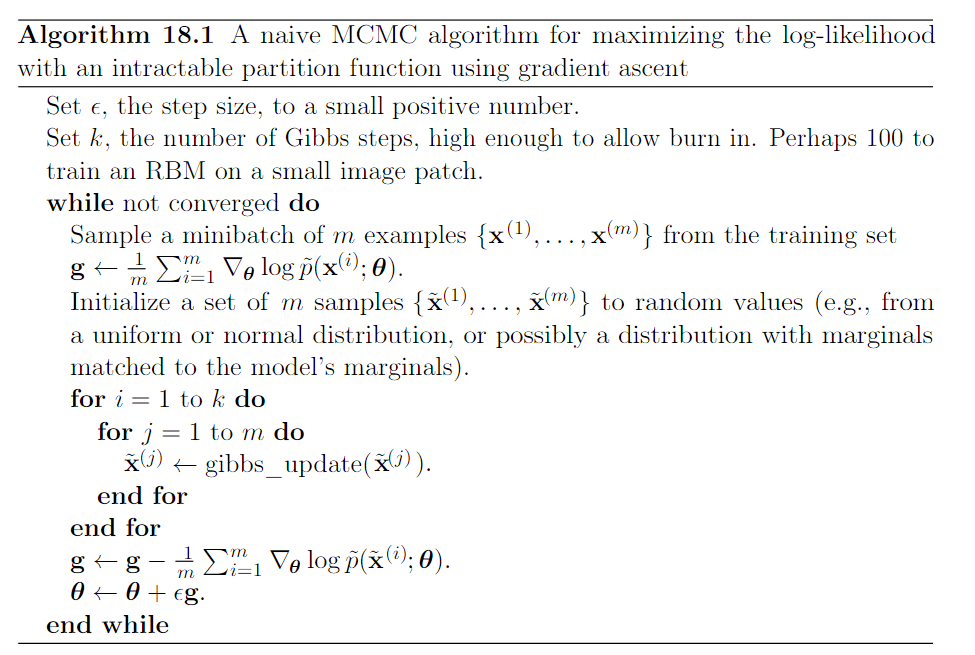
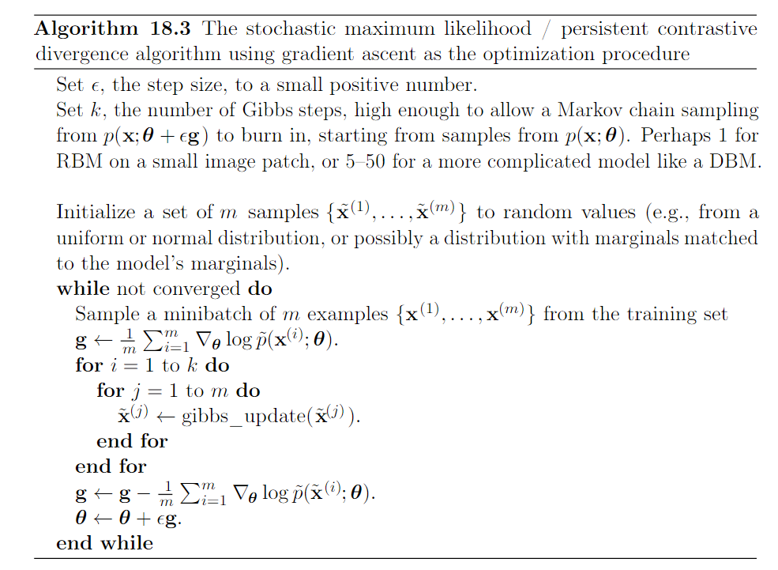

18.2 Stochastic Maximum Likehood and Contrastive Divergence¶
Naive way of implement:
is by burning in a set of Markov chains from a random initialization everytime the gradient is needed. When learning is performed using stochastic gradient decent, the chains must be burned in once per gradient step.
Review on Monte Carlo Markov Chain:
Core idea of Markov Chain: have a state x that begins as a arbitrary value. Over time, we randomly update x repeately. Eventually x becomes (very nearly) a fair sample from p(x). Formally:
- random state x
- transition distribution \(T(x'|x)\) specifying the probability that a random update will go to state \(x'\) if it starts in state x
- repeately updating the state x to a value x sampled from \(T(x'|x)\)
algorithm 1: A naive MCMC
The hight cost of burning in the Markov chains in the inner loop makes this procudure computationally infeasible.
We can view the MCMC approach to maximum likehood as trying to achive balance between two forces:
- one pushing up on the model distribution where the data occurs. It corresponds to maximize \(\log \hat{p}(x)\)
- another pushing down on the model distribution where the model samples occurs. It corresponds to minimize \(\log Z\).

Because the negative phase involves drawing samples from the model’s distribution, we can think of it as finding points that the model belives in strongly. Because the negative phase acts to reduce the probability of those points, they are generally considered to represent the model’s incorrect beliefs about the world.
- problem: The main cost of naive MCMC algo: the cost of burning in Markove Chains from a random initialization at each step.
- solution: natural solution, initialize the Markove chain from a distrbution that is very close to the model distribution, so that the burn in operation does not take as many steps, as described below
algorithm 2: contrastive divergence (CD or CD-k to indicate CD with k Gibbs sampling). CD initializes the Markov chain at each step with samples from the data distribution.

Initially, the data distribution is not close to the model distribution, so the negative phase is not accurate. Positive phase can still accurately increase the model probability of the data. After positive phase had some time to act, the model distribution is closer to the data distribution, and the negative phase starts to become accurate.
Where CD qualitatively fails: it fails to suppress region of high probability that are far from actual traininng examples.
Spurious modes: regions that have probability under the model but low probability under the data-generating distribution. Modes in the model distribution that are far from the data distribution that are far from the data distribution will not be visited by Markov chains initialized at training points, unless k is very large.

Review:
- Boltzmann Machine is today most often used to disignate models with latent variables
- Boltzmann machines without latent variables are more often called Markov random field or log-linear models.
CD estimator is biased for RBM and fully visible Boltzman machiens. It is useful for training shallow models like RBMs. These can in turn be stacked to intialize deeper models like DBNs or DBMs. It does not provide much help for training deep models directly,. Because it is difficult to obtain samples of the hidden units given samples of the visible units.
CD algorithm can be thought of as penalizing the model for having Markov Chain that changes the input rapidly when the input comes from the data. Useful for pretraining shallow models that will later be stacked. This is because the earlist model in the stack are encouraged to copy more information up to the latent variables, thereby making it available to the later models.
algorithm 3: stochastic maximum likehood (SML), AKA, persistent contrastive divergence (PCD). Initialize the markov chains at each gradient step with their states from the previous gradient step.
Basic idea of SML: as long as the steps taken by the stochastic gradient algorithm are small, the model from the previous step will be similar to the model from the current step. It follows that the samples from the previous model’s distribution will be very close to being fair samples from the current model’s distribution, so Markov chain initialized with these samples will not require much time to mix.
Pros:
- Considerably more resistant to forming models with spurious modes than CD is.
- Because it is possible to store the state of all the sampled variables, whether visible or latent, SML provides an initialization point for both the hidden and visible units. SML is able to train deep models efficiently.
Cons:
- SML is vulnerable to becoming inaccurate if the stochastic gradient algorithm can move the model faster than the Markov chian can mix between steps. This can happen when k is too small or \(\epsilon\) is too large. If the \(\epsilon\) is too high for k, the human operator will be able to observe much more variance in the negative phase samples accross gradient steps than accross different Markov Chain.
- Care must be taken when evaluating the samples from a model trained with SML. It is neccessary to draw the samples starting from a fresh Markov chain initialized from a random starting point after the models is done training.
- CD proves to have lower variance than the estimator based on exact sampling. SML has higher variance.
All these methods based on using MCMC to draw samples from model can in principle be used with almost any variant of MCMC
Fast PCD involves replacing parameters \(\theta\) with
There are twice as many parameters as before and they are added together element-wise to provide the parameters used by the original model definition. The fast copy of the parameters is trained with a much larger learning rate, allowing it to adapt rapidly in respond to the negative phase of learning and push Markov chain to new territory. Typically one also applies significant weight decay while the fast weights, encouraging them to converge to small values, after transiently taking on large values long enough to encourage the Markov chain to change modes.
Key benefit of MCMC based methods: we can decompose the problem into the \(\log \hat{p}\) contribution and log Z contribution.